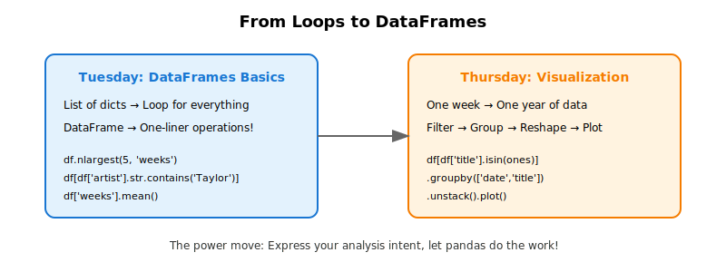
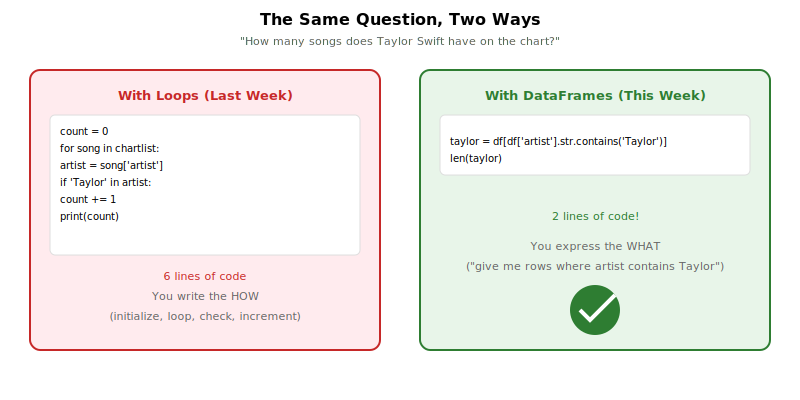
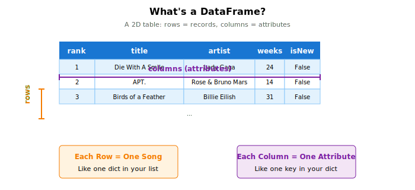
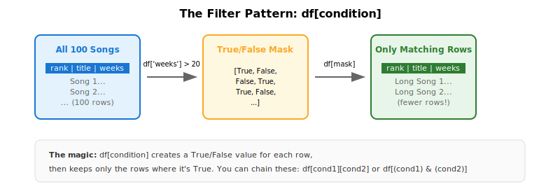
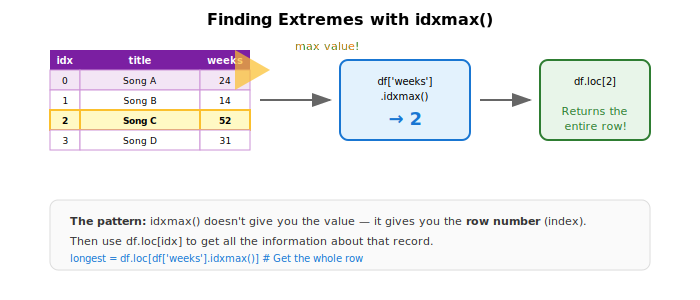
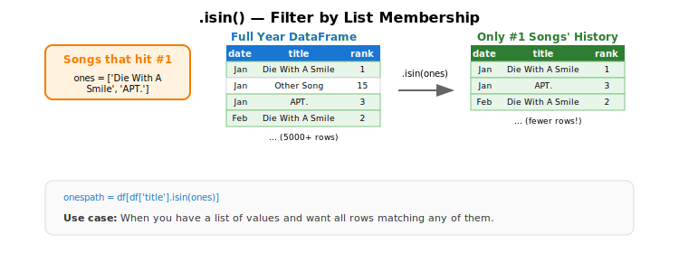
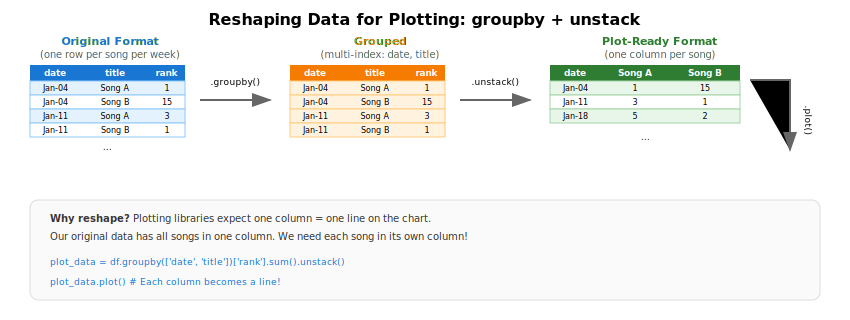
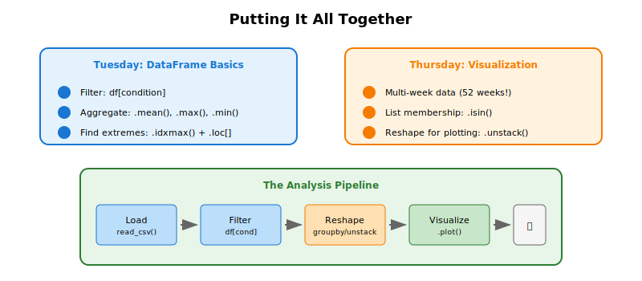

Week 5: DataFrames and Visualization
This week we leveled up from loops to DataFrames! We discovered that pandas can do in one or two lines what previously required five or six. Then we learned how to visualize data to spot patterns that numbers alone might miss.
Your Growing Toolkit
Every problem we solve uses some combination of these tools:
- Representation — how we encode meaning (binary, types, RGB)
- Collections — how we group things (lists, tuples, dicts)
- Control flow — how we make decisions and repeat (if/else, loops)
- Functions — how we name and reuse logic
- Abstraction — how we hide complexity
- Efficiency — how we measure cost (summations, timing analysis)
This week: DataFrames (a new kind of collection) + Visualization (seeing patterns) → Powerful data analysis
The Big Picture

We started with Billboard Hot 100 data stored as lists of dictionaries, and ended up with beautiful trajectory plots showing how songs move through the charts. Along the way, we learned that the right data structure can make complex analysis feel almost effortless.
Tuesday: DataFrames
We made a dramatic shift from writing loops for everything to letting pandas do the heavy lifting.
The Problem with Loops
Last week, we explored Billboard data using lists of dictionaries. Every question required a loop:
# Count songs by artist — the loop way
artist_counts = {}
for song in chartlist:
artist = song['artist']
if artist in artist_counts:
artist_counts[artist] += 1
else:
artist_counts[artist] = 1This works, but it’s verbose. Finding the average weeks on chart? Another loop. Finding the #1 song? Another loop. It gets tedious!
The DataFrame Solution

A DataFrame is a 2D table where rows are records and columns are attributes. The key insight is that DataFrames have built-in operations for common tasks:
import pandas as pd
# Load data
df = pd.read_csv('billboard.csv')
# Count new songs — one line!
new_count = df[df['isNew']].shape[0]
# Average weeks on chart — one line!
avg_weeks = df['weeks'].mean()What Is a DataFrame?

Think of a DataFrame like a spreadsheet:
- Each row is one record (one song on one week’s chart)
- Each column is one attribute (title, artist, rank, weeks, etc.)
- You can select, filter, and aggregate with simple expressions
Creating DataFrames
You can create a DataFrame from a list of dictionaries:
df = pd.DataFrame(chartlist)Or load directly from a CSV file:
df = pd.read_csv('billboard.csv')Viewing Your Data
df.head(10) # First 10 rows
df.shape # (rows, columns)
df.columns.tolist() # List of column namesPattern 1: Filtering
One of the most powerful DataFrame operations is filtering — selecting only the rows that match some condition.

The Basic Pattern
# General form
filtered_df = df[condition]
# Examples
long_runners = df[df['weeks'] > 20] # Songs on chart 20+ weeks
taylor_songs = df[df['artist'].str.contains('Taylor')] # Taylor Swift songs
peaked_at_one = df[df['peakPos'] == 1] # Songs that peaked at #1The expression df['weeks'] > 20 creates a boolean mask — a series of True/False values, one for each row. When you use this mask inside df[...], you get back only the rows where the mask is True.
Counting Filtered Results
Once you’ve filtered, counting is simple:
# How many Taylor Swift songs?
taylor = df[df['artist'].str.contains('Taylor')]
print(f"Taylor Swift has {len(taylor)} songs on the chart")
# How many songs peaked at #1?
print(f"Songs that peaked at #1: {len(df[df['peakPos'] == 1])}")Adding Computed Columns
You can create new columns based on existing ones:
# How much did each song move this week?
df['gradient'] = df['last_week'] - df['rank']
# Find songs that rose more than 10 spots
risers = df[df['gradient'] > 10]Pattern 2: Aggregation
Aggregation functions summarize an entire column into a single value:
| Function | What it computes |
|---|---|
.mean() |
Average value |
.max() |
Maximum value |
.min() |
Minimum value |
.sum() |
Total of all values |
.count() |
Number of values |
Examples
# Average weeks on chart
avg_weeks = df['weeks'].mean()
print(f"Average: {avg_weeks:.1f} weeks")
# Longest-running song's weeks
max_weeks = df['weeks'].max()
print(f"Maximum: {max_weeks} weeks")
# Combined with filtering
top10 = df[df['rank'] <= 10]
print(f"Top 10 average weeks: {top10['weeks'].mean():.1f}")Pattern 3: Finding Extremes
What if you want not just the maximum value, but the entire row with that maximum? That’s where idxmax() comes in.

The Two-Step Pattern
# Step 1: Find the INDEX of the maximum
idx = df['weeks'].idxmax()
# Step 2: Get the full row at that index
longest_song = df.loc[idx]
print(f"Longest-running: {longest_song['title']}")
print(f" by {longest_song['artist']}")
print(f" {longest_song['weeks']} weeks on chart")Why Two Steps?
df['weeks'].max()returns52(just the number)df['weeks'].idxmax()returns17(the row index)df.loc[17]returns the entire row, so you can access all its fields
Biggest Riser This Week
Here’s a more complex example that combines filtering with finding extremes:
# Exclude new songs (they weren't on chart last week)
returning = df[df['lastPos'] > 0].copy()
# Calculate how much each song moved
returning['change'] = returning['lastPos'] - returning['rank']
# Find the biggest riser
idx = returning['change'].idxmax()
riser = returning.loc[idx]
print(f"Biggest riser: {riser['title']}")
print(f" #{riser['lastPos']} → #{riser['rank']} (up {riser['change']} spots)")The datetime Warm-Up
Before diving into DataFrames, we learned about Python’s datetime module. This was useful because the Billboard library expects dates in a specific format.
Finding “Last Saturday”
Billboard charts are released on Saturdays. To find the most recent Saturday:
from datetime import date, timedelta
def getLastSaturday(day):
w = day.weekday() # Mon=0, ..., Sat=5, Sun=6
offset = (w - 5) % 7 # Days since Saturday
return day - timedelta(days=offset)
today = date.today()
last_saturday = getLastSaturday(today)The formula (w - 5) % 7 uses modular arithmetic to compute how many days back we need to go to reach Saturday (which is weekday 5).
Thursday: Visualization
We moved from single snapshots to analyzing an entire year of data, then visualized song trajectories to spot patterns.
From One Week to 52 Weeks
Tuesday’s data was a snapshot — 100 songs from one week. Thursday’s data was a full year:
df = pd.read_csv('billboard2025.csv')
print(f"Shape: {df.shape}") # (5200, 12) - 52 weeks × 100 songs!
print(f"Weeks: {df['date'].nunique()}") # 52 unique datesThe Same Song, Many Rows
In multi-week data, each song appears multiple times — once for each week it’s on the chart:
# Track "Die With A Smile" through the year
example = df[df['title'] == 'Die With A Smile'][['date', 'rank', 'weeks']]
print(example.head(10))This structure lets us see a song’s journey through the charts!
Finding the #1 Songs
Step 1: Filter to rows where rank equals 1
at_number_one = df[df['rank'] == 1]
print(f"Rows where a song was #1: {len(at_number_one)}")Step 2: Get the unique song titles (a song might be #1 for multiple weeks)
ones = df[df['rank'] == 1]['title'].unique()
print(f"Unique songs that hit #1: {len(ones)}")Pattern 4: List Membership with .isin()
Now we want the complete chart history of every song that ever hit #1. How do we filter for rows where the title appears in a list?

The Pattern
# songs_to_find is a list of titles
hits_history = df[df['title'].isin(songs_to_find)]Example with Students
students = pd.DataFrame({
'name': ['Bluey', 'Dora', 'Arthur', 'Peppa'],
'major': ['ECON', 'BIOC', 'PHAS', 'EOSC']
})
majors_to_find = ['ECON', 'PHAS']
found = students[students['major'].isin(majors_to_find)]
# Returns Bluey and ArthurGetting All Data for #1 Songs
# Get list of songs that were ever #1
ones = df[df['rank'] == 1]['title'].unique()
# Get ALL rows for those songs (their complete histories)
ones_path = df[df['title'].isin(ones)]
print(f"Total rows for #1 songs: {len(ones_path)}")Reshaping for Plotting
To plot each song as a separate line, we need to transform our data. Our data looks like this (one row per song per week):
| date | title | rank |
|---|---|---|
| 2025-01-04 | Song A | 1 |
| 2025-01-04 | Song B | 15 |
| 2025-01-11 | Song A | 3 |
| 2025-01-11 | Song B | 1 |
But plotting wants one column per song:
| date | Song A | Song B |
|---|---|---|
| 2025-01-04 | 1 | 15 |
| 2025-01-11 | 3 | 1 |
Pattern 5: groupby + unstack

Step by Step
# Step 1: Group by date AND title
grouped = ones_path.groupby(['date', 'title'])
# Step 2: Extract the rank for each group
ranks = grouped['rank'].sum() # sum() just extracts the single value
# Step 3: Pivot titles into columns
plot_data = ranks.unstack()Or as one line:
plot_data = ones_path.groupby(['date', 'title'])['rank'].sum().unstack()Creating the Trajectory Plot
import matplotlib.pyplot as plt
fig, ax = plt.subplots(figsize=(10, 6))
# Plot all trajectories
plot_data.plot(ax=ax)
# IMPORTANT: Invert y-axis so #1 is at the top!
ax.invert_yaxis()
ax.set_ylabel('Chart Position')
ax.set_xlabel('Date')
ax.set_title('Chart Trajectories of #1 Songs (2025)')
ax.legend(bbox_to_anchor=(1.02, 1), loc='upper left', fontsize=8)
plt.tight_layout()
plt.show()Why Invert the Y-Axis?
In chart positions, lower numbers are better (#1 is the top). By default, matplotlib puts low values at the bottom. We call ax.invert_yaxis() to flip this, so #1 appears at the top of the plot.
Scatter Plots: Debut vs. Staying Power
We also explored whether a strong debut predicts how long a song stays on the chart.
Finding Debut Position
# Songs in their first week (isNew == True)
debuts = df[df['isNew'] == True][['title', 'rank']]Finding Total Weeks
# Maximum weeks for each song
staying_power = df.groupby('title')['weeks'].max()Merging the Data
# Prepare DataFrames for merging
debuts_df = debuts.rename(columns={'rank': 'debut_rank'})
staying_df = staying_power.reset_index().rename(columns={'weeks': 'total_weeks'})
# Merge on title
combined = pd.merge(debuts_df, staying_df, on='title')The Scatter Plot
fig, ax = plt.subplots(figsize=(10, 6))
ax.scatter(combined['debut_rank'], combined['total_weeks'], alpha=0.5)
ax.invert_xaxis() # Lower debut rank (better) on the right
ax.set_xlabel('Debut Position (lower = better)')
ax.set_ylabel('Total Weeks on Chart')
ax.set_title('Does a Strong Debut Mean Staying Power?')
plt.show()The Analysis Pipeline

Most data analysis follows this pattern:
- Load —
pd.read_csv()to get your data - Filter —
df[condition]to focus on relevant rows - Reshape —
groupby()andunstack()to reorganize for analysis - Visualize —
.plot()to see patterns
Quick Reference
Loading Data
| Task | Code |
|---|---|
| From CSV file | df = pd.read_csv('file.csv') |
| From list of dicts | df = pd.DataFrame(list_of_dicts) |
| View first rows | df.head(10) |
| Get dimensions | df.shape |
| List columns | df.columns.tolist() |
Filtering
| Task | Code |
|---|---|
| By condition | df[df['col'] > value] |
| String contains | df[df['col'].str.contains('text')] |
| Equality | df[df['col'] == value] |
| List membership | df[df['col'].isin(list)] |
Aggregation
| Task | Code |
|---|---|
| Average | df['col'].mean() |
| Maximum | df['col'].max() |
| Minimum | df['col'].min() |
| Sum | df['col'].sum() |
| Count | len(df) or df.shape[0] |
Finding Extremes
| Task | Code |
|---|---|
| Index of max | idx = df['col'].idxmax() |
| Index of min | idx = df['col'].idxmin() |
| Get that row | df.loc[idx] |
Reshaping
| Task | Code |
|---|---|
| Group and aggregate | df.groupby('col')['val'].sum() |
| Group by multiple | df.groupby(['a', 'b'])['val'].sum() |
| Pivot to columns | .unstack() |
Plotting
import matplotlib.pyplot as plt
fig, ax = plt.subplots(figsize=(10, 6))
df.plot(ax=ax) # Line plot
ax.scatter(x_data, y_data) # Scatter plot
ax.invert_yaxis() # Flip y-axis
ax.set_xlabel('Label')
ax.set_ylabel('Label')
ax.set_title('Title')
plt.show()What’s Next?
We’ve seen how DataFrames make data analysis elegant and powerful. But all our work has been on existing columns — filtering and aggregating values that were already there.
Next week, we’ll explore dictionaries in depth, learning patterns for counting, grouping, and transforming data that will make your code even more versatile!